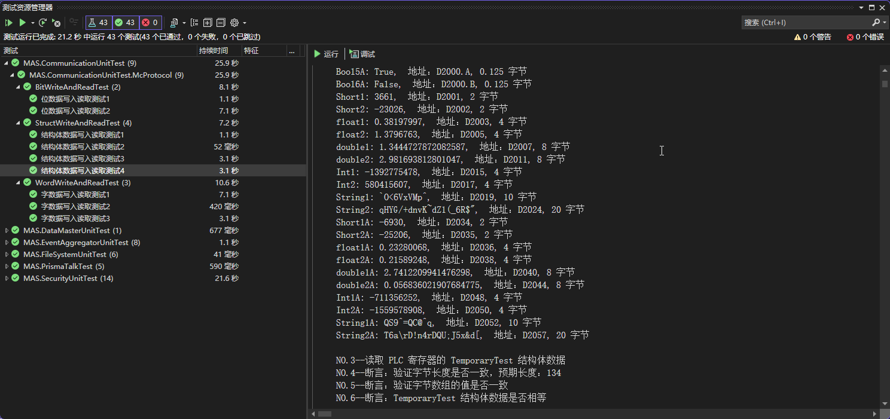

三菱通讯构建设计
MC协议简介
三菱 PLC 的开放通信协议，支持以太网、串口通信
- 3E帧格式：3E帧格式是最常用的通讯格式，由三个字节的帧头、一个字节的设备地址、一个字节的功能码、一个字节的数据长度、若干字节的数据和两个字节的CRC校验码组成
- 3C帧格式：3C帧格式与3E帧格式相似，不同之处在于帧头由两个字节组成，其余部分与3E帧格式一致
- 4C帧格式：4C帧格式与3C帧格式类似，但加入了一个扩展位，表示数据是否需要加密
- 4E帧格式：4E帧格式是一种高速通讯格式，由四个字节的帧头、一个字节的设备地址、一个字节的功能码、一个字节的数据长度、若干字节的数据和两个字节的CRC校验码组成
数据类型映射表
| .NET类型 | 大小 | PLC存储方式 | 备注 |
|---|---|---|---|
| bool | 1 bit | M寄存器单个位 | 每个 bool 值对应一个 M 寄存器中的单个位 |
| short | 2 字节 | D寄存器1个字 | 使用 D 寄存器来存储 16 位整数 |
| int | 4 字节 | D寄存器连续2个字 | 使用 D 寄存器的连续两个字存储 32 位整数 |
| float | 4 字节 | D寄存器连续2个字 | 将浮点数映射为两个 D 寄存器，表示 32 位浮点数 |
| double | 8 字节 | D寄存器连续4个字 | 使用 4 个 D 寄存器表示 64 位浮点数 |
| byte | 1 字节 | D寄存器低8位 | 字节映射到 D 寄存器的低8位 |
结构体定义规范
使用紧凑内存布局，映射到 PLC 寄存器中的 D：
[StructLayout(LayoutKind.Sequential, Pack = 1)]
public struct SampleStruct {
public short AxisSpeed; // 占 2 字节 -> 1 个 D 寄存器 -> D1000
public int Position; // 占 4 字节 -> 2 个 D 寄存器 -> D1001, D1002
public bool IsEnabled; // 占 1 位 -> D1003 的第一个位（0 ~ 15 位） 即 D1003.0
public double SpeedFactor; // 占 8 字节 -> 4 个 D 寄存器 -> D1004, D1005, D1006, D1007
[MitsubishiString(20)]
public string ProductId; // 占用 10 个字节，映射到 D1008 ~ D1012
}
字节处理规则
- 使用小端字节序：低位字节存储在低地址，高位字节存储在高地址
- 位字段处理：
- 多个 bool 打包到连续字节
- 一个 bool 类型需要占 0.125 字节
- bool 考虑字节对齐的问题，即不足 2 字节将补齐
- ASCII 编码中，每个字符占用 1 个字节，一个 D 寄存器可以存 2 个字节
附加说明：
MitsubishiString特性可以指定字符串的长度和对应的D寄存器映射- 字符串长度与
D寄存器数量的映射关系：每个D寄存器保存2个字节（即两个字符）
构建示例
任务执行请求结构体
读取起始地址为 D1000：
public struct TaskHandlerStruct {
[TaskField(0, "EquipmentDataStruct")]
public short ReadEquipmentData; // 读取设备信息 -> D1000
[TaskField(1, "ProductInfoStruct")]
public short ReadProductInfo; // 读取产品信息 -> D1001
[TaskField(2, "MixedDataStruct")]
public short ReadMixedData; // 包含各种数据类型的示例 -> D1002
// 依葫芦画瓢 ...
}
任务完成写入结构体
写入起始地址为 D2000：
// 结构体复用 TaskHandlerStruct
public struct TaskHandlerStruct {
[TaskField(0, "EquipmentDataStruct")]
public short ReadEquipmentData; // 读取设备信息完成 -> D2000
[TaskField(1, "ProductInfoStruct")]
public short ReadProductInfo; // 读取产品信息完成 -> D2001
[TaskField(2, "MixedDataStruct")]
public short ReadMixedData; // 包含各种数据类型的示例完成 -> D2002
// 依葫芦画瓢 ...
}
数据读取结构体
读取起始地址为 D3000：
/// <summary>
/// 设备信息
/// </summary>
public struct EquipmentDataStruct {
public bool IsCreate; // 是否创建(CRUD) -> D3000.0
public bool IsRead; // 是否读取(CRUD) -> D3000.1
public bool IsUpdate; // 是否更新(CRUD) -> D3000.2
public bool IsDelete; // 是否删除(CRUD) -> D3000.3
public bool IsAddOrUpdate; // 是否添加或更新(CRUD) -> D3000.4
public bool IsNewFile; // 是否新建文件 -> D3000.5
[MitsubishiString(20)]
public string EquipmentName; // 设备的名称 -> D3001 ~ D3010
[MitsubishiString(20)]
public string EquipmentType; // 设备类型 -> D3011 ~ D3020
[MitsubishiString(50)]
public string SerialNumber; // 设备的序列号，唯一 -> D3021 ~ D3045
[MitsubishiString(10)]
public string Status; // 设备当前的操作状态 -> D3046 ~ D3050
[MitsubishiString(20)]
public string Manufacturer; // 设备的制造商 -> D3051 ~ D3060
[MitsubishiString(50)]
public string Model; // 设备型号 -> D3061 ~ D3085
[MitsubishiString(50)]
public string Location; // 设备的安装位置 -> D3086 ~ D3110
[MitsubishiString(50)]
public string Notes; // 关于设备的额外注释或详细信息 -> D3111 ~ D3135
}
/// <summary>
/// 产品信息
/// </summary>
public struct ProductInfoStruct {
public bool IsCreate; // 是否创建(CRUD) -> D3146.0
public bool IsRead; // 是否读取(CRUD) -> D3146.1
public bool IsUpdate; // 是否更新(CRUD) -> D3146.2
public bool IsDelete; // 是否删除(CRUD) -> D3146.3
public bool IsAddOrUpdate; // 是否添加或更新(CRUD) -> D3146.4
public bool IsNewFile; // 是否新建文件 -> D3146.5
public short EquipmentId; // 设备唯一标识符，外键，关联到 EquipmentData 表 -> D3147
[MitsubishiString(20)]
public string ProductId; // 产品Id，唯一 -> D3148 ~ D3157
[MitsubishiString(20)]
public string ProductCode; // 产品编码 -> D3158 ~ D3167
[MitsubishiString(20)]
public string RecipeId; // 产品配方ID -> D3168 ~ D3177
[MitsubishiString(20)]
public string ProductName; // 产品名称 -> D3178 ~ D3187
[MitsubishiString(20)]
public string Category; // 产品类别 -> D3188 ~ D3197
[MitsubishiString(50)]
public string Notes; // 额外注释或详细信息 -> D3198 ~ D3222
}
/// <summary>
/// 包含各种数据类型的示例
/// </summary>
public struct MixedDataStruct {
public bool IsCreate; // 是否创建(CRUD) -> D3233.0
public bool IsRead; // 是否读取(CRUD) -> D3233.1
public bool IsUpdate; // 是否更新(CRUD) -> D3233.2
public bool IsDelete; // 是否删除(CRUD) -> D3233.3
public bool IsAddOrUpdate; // 是否添加或更新(CRUD) -> D3233.4
public bool IsNewFile; // 是否新建文件 -> D3233.5
public short Id; // 2 字节 -> D3234, D3235
public float Temperature; // 4 字节 -> D3236 ~ D3239
public double Pressure; // 8 字节 -> D3240 ~ D3247
public int Volume; // 4 字节 -> D3248 ~ D3251
public bool IsActive; // 1 位 -> D3233.6，注：根据字节处理规则
public bool IsAlarm; // 1 位 -> D3233.7，注：根据字节处理规则
public bool IsOperational; // 1 位 -> D3233.8，注：根据字节处理规则
public bool IsError; // 1 位 -> D3233.9，注：根据字节处理规则
[MitsubishiString(20)]
public string DeviceName; // 20 字节 -> D3252 ~ D3271
[MitsubishiString(50)]
public string ManufacturerName; // 50 字节 -> D3272 ~ D3321
}
附加说明：
ProductInfoStruct从D3146开始，这是因为EquipmentDataStruct结束在D3135，并且根据为未来的扩展字段预留了10个D寄存器的空间（即 D3136 到 D3145）- TaskField 的顺序决定了
数据读取结构体在 PLC 中的分配先后- [TaskField(0, "EquipmentDataStruct")] 表示索引为 0 的
EquipmentDataStruct是第一个要分配的结构体，起始地址设定为 D3000 - [TaskField(1, "ProductInfoStruct")] 表示索引为 1 的
ProductInfoStruct是第二个要分配的结构体，顺次排在EquipmentDataStruct之后，起始地址为 D3146 - [TaskField(2, "MixedDataStruct")] 表示索引为 2 的
MixedDataStruct是第三个要分配的结构体，顺次排在ProductInfoStruct之后，起始地址为 D3233
- [TaskField(0, "EquipmentDataStruct")] 表示索引为 0 的
因此，在修改或扩展任务字段时，应特别注意保持已有字段的顺序，以免造成地址映射混乱
写入布尔数据
- 数据块对齐：每个数据块必须是 16 位对齐的。这意味着即使传输的数据位数（例如 9 位、17 位等）没有完全填满 16 位，也必须为其分配 2 字节
- 16 位数据块为 2 字节：协议要求每 16 位数据为 1 个数据块，且该数据块必须占用 2 字节。因此，如果数据总长度是 16 位或 32 位，应该根据具体的位数，动态计算字节数和块数
- 字节存储：PLC 中的数据存储是按字节进行的，每个字节可以存储 8 位数据。写入时将布尔值按位填充到字节中，并传递给 PLC
- 块的大小：根据数据位数的大小（如 16 位、32 位等），计算数据块的长度。例如：
- 16 位布尔值需要 1 个数据块（2 字节）
- 32 位布尔值需要 2 个数据块（4 字节）
- 若数据位数不足 16 位但仍需要传输，要求为其分配 2 字节
public async Task WriteBitsAsync(string deviceType, int startAddress, bool[] values, CancellationToken cts = default) {
try {
int numBits = values.Length;
// 计算所需字节数：
// 每 16 位数据块需要 2 字节，因此需要根据位数计算字节长度
// 例如：16 位 -> 2 字节，32 位 -> 4 字节，且不足 16 位时仍需要分配 2 字节
int byteLength = (numBits / 16 + ((numBits % 16 > 0) ? 1 : 0)) * 2;
byte[] bytes = new byte[byteLength];
// 遍历布尔值数组，将布尔值按位填充到字节数组中
for (int i = 0; i < numBits; i++) {
int wordIndex = i / 16; // 每 16 位为一个块
int bitInWord = i % 16; // 在当前 16 位块中的位置
int byteIndex = wordIndex * 2 + (bitInWord / 8); // 字节的索引
int bitInByte = bitInWord % 8; // 字节内的具体位
if (values[i]) {
bytes[byteIndex] |= (byte)(1 << bitInByte);
} else {
bytes[byteIndex] &= (byte)~(1 << bitInByte);
}
}
cts.ThrowIfCancellationRequested();
_ = await _plc.WriteDeviceBlock(
MitsubishiHelper.ParsePlcDeviceType(deviceType),
startAddress,
byteLength / 2, // 16 位为 1 块，32 位为 2 块...
bytes
).ConfigureAwait(false);
} catch (OperationCanceledException) {
throw;
} catch (Exception ex) {
throw new PlcWriteErrorException(
$"Error writing bits to PLC. Device: {deviceType}, StartAddress: {startAddress}, Length: {values.Length}.", ex);
}
}
写入字数据
- 数据块对齐：每个数据块必须是 16 位对齐的。这意味着，即使传输的数据位数（例如 9 位、17 位等）没有完全填满 16 位，也必须为其分配 2 字节
- 字数据块：16 位数据为 1 个字数据块（2 字节），即每个 short 类型的值占用 2 字节，如果传输的数据位数不足 16 位，但仍需要传输，要求为其分配 2 字节
- 字节存储：PLC 中的数据存储是按字节进行的，每个字（16 位）将占用 2 字节
- 块的大小：根据数据位数的大小（如 16 位、32 位等），计算数据块的长度
- 16 位 short 类型需要 1 个数据块（2 字节）
- 32 位 short[] 数组总共占用 2 个数据块（4 字节）
public async Task WriteWordsAsync(string deviceType, int startAddress, short[] values, CancellationToken cts = default) {
try {
int byteLength = values.Length * 2; // 每个 short 占 2 字节
byte[] bytes = new byte[byteLength];
// 将 short 数组中的每个值转换为字节，并复制到目标字节数组
for (int i = 0; i < values.Length; i++) {
byte[] shortBytes = BitConverter.GetBytes(values[i]);
Array.Copy(shortBytes, 0, bytes, i * 2, 2); // 将字节复制到目标字节数组
}
cts.ThrowIfCancellationRequested();
_ = await _plc.WriteDeviceBlock(
MitsubishiHelper.ParsePlcDeviceType(deviceType),
startAddress,
byteLength / 2, // 这里传递的块数是按 16 位对齐计算的，所以 byteLength / 2
bytes
).ConfigureAwait(false);
} catch (OperationCanceledException) {
throw;
} catch (Exception ex) {
throw new PlcWriteErrorException(
$"Error writing words to PLC. Device: {deviceType}, StartAddress: {startAddress}, Length: {values.Length}.", ex);
}
}
测试
